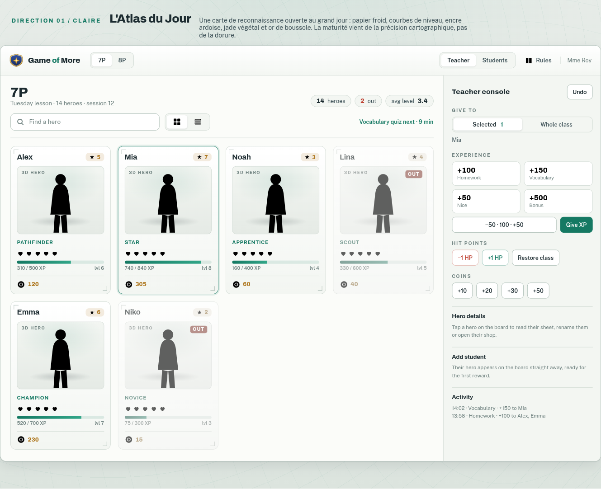

Proposition 01 · claireL'Atlas du Jour
Cartographie ouverte au grand jour
- Matière papier froid, courbes de niveau, encre ardoise, jade et or de boussole.
- Maturité par la précision cartographique : règles fines, coins repérés, pas de dorure.
- Pour une ambiance scolaire claire et aérée, qui reste lisible en plein jour.